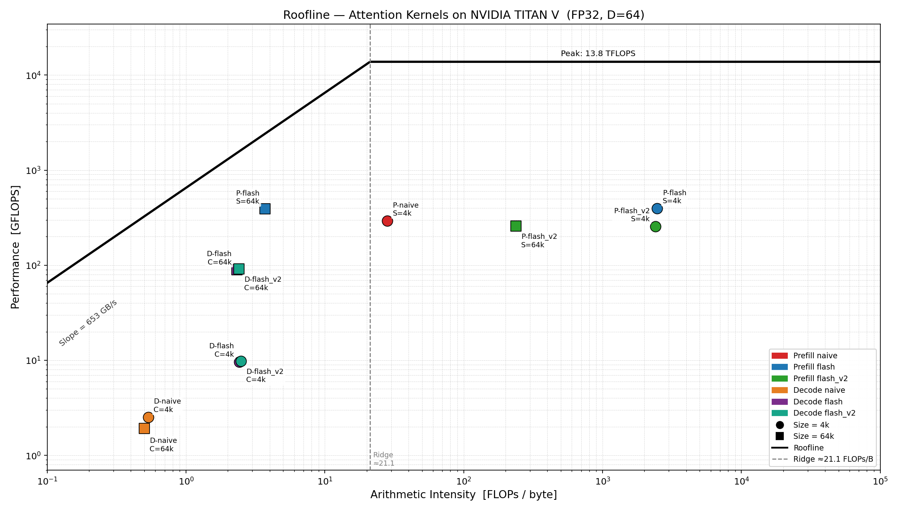

GPU: NVIDIA TITAN V (Volta GV100)
| Parameter | Value |
|---|---|
| FP32 peak compute | 14,900 GFLOPS (14.9 TFLOPS) |
| HBM2 peak bandwidth | 652.8 GB/s |
| L2 cache | 4.5 MB |
| Shared memory / SM | 96 KB |
| SMs | 80 |
| Ridge point | 22.82 FLOPs/byte |
Each query row i is independent, so the natural mapping is one CUDA block per query row: Grid = (S,). Within a block, D=64 threads handle the D output dimensions in parallel — one thread owns one output element and accumulates its result across all attended keys.
For the flash kernels, the K/V tile (16 or 32 rows) is loaded cooperatively by all 64 threads into shared memory; each thread contributes tile_rows load operations strided by D. The cross-thread dot-product reduction uses __shfl_down_sync within each warp and a two-element swarp[] array for cross-warp communication.
Scalability:
Grid = (S, batch) and proportionally more memory.Decode has only one query vector; the natural parallelism is across the C context positions. The flash decode kernels use one block per slice of C: Grid = (⌈C/slice⌉,), Block = D=64 threads. This distributes K/V reads across multiple SMs.
Scalability:
Each output row i attends to keys j = 0, 1, …, i (causal masking). The computation for row i is:
Total FMAs per row i = 2·(i+1)·D (the factor of 2 counts both QK and AV passes).
Summing over all rows and converting FMAs to FLOPs (1 FMA = 2 FLOPs):
FMAs = Σ_{i=0}^{S-1} 2·(i+1)·D
= 2·D · S·(S+1)/2
= D · S · (S+1)
FLOPs = FMAs × 2 = 2·D·S·(S+1)
The factor of 2 in the final answer comes from the FMA→FLOPs conversion (1 FMA = 1 multiply + 1 add = 2 FLOPs), not from double-counting QK and AV — those are already accounted for in the per-row FMA count.
| Workload | S | FLOPs |
|---|---|---|
| Prefill S=4096 | 4,096 | 2 × 64 × 4096 × 4097 ≈ 2.15 GFLOP |
| Prefill S=65536 | 65,536 | 2 × 64 × 65536 × 65537 ≈ 549.8 GFLOP |
One query vector attends to all C context positions:
Total = 2·C·D. The softmax itself (exp, division) is not counted as FFMA but contributes to execution time.
| Workload | C | FLOPs |
|---|---|---|
| Decode C=4096 | 4,096 | 2 × 4096 × 64 ≈ 0.52 MFLOP |
| Decode C=65536 | 65,536 | 2 × 65536 × 64 ≈ 8.39 MFLOP |
Note: NCU counts 4·C·D FFMA instructions for decode (not 2·C·D) because the online softmax update — s = s*corr + es and o = o*corr + es*sV — adds roughly 2·C·D additional multiply-adds beyond the bare QK/AV math. The algorithmic FLOP count uses only the mathematically necessary operations.
| Kernel | Size | Time (ms) | GFLOPS | Speedup vs naive |
|---|---|---|---|---|
| prefill_naive | S=4096 | 7.356 | 292.0 | 1.00× |
| prefill_flash | S=4096 | 5.444 | 394.6 | 1.35× |
| prefill_flash_v2 | S=4096 | 8.433 | 254.7 | 0.87× |
| prefill_naive | S=65536 | — | — | N/A (OOM) |
| prefill_flash | S=65536 | 1406.6 | 390.8 | — |
| prefill_flash_v2 | S=65536 | 2128.0 | 258.4 | 0.66× vs flash |
| decode_naive | C=4096 | 0.417 | 2.52 | 1.00× |
| decode_flash | C=4096 | 0.109 | 9.66 | 3.83× |
| decode_flash_v2 | C=4096 | 0.106 | 9.85 | 3.91× |
| decode_naive | C=65536 | 8.700 | 1.93 | 1.00× |
| decode_flash | C=65536 | 0.186 | 90.0 | 46.8× |
| decode_flash_v2 | C=65536 | 0.183 | 91.5 | 47.5× |
GFLOPS = algorithmic FLOPs / measured time.
Theoretical AI assumes each input matrix element is read exactly once and each output element is written once:
Minimum bytes (float32 = 4 bytes):
| Workload | Algorithmic FLOPs | Min bytes | Theoretical AI |
|---|---|---|---|
| Prefill S=4096 | 2.148 × 10⁹ | 4 × 4096 × 64 × 4 = 4.194 MB | 512 FLOPs/byte |
| Prefill S=65536 | 549.8 × 10⁹ | 4 × 65536 × 64 × 4 = 67.1 MB | 8,192 FLOPs/byte |
| Decode C=4096 | 0.524 × 10⁶ | 2 × 4096 × 64 × 4 = 2.10 MB | 0.25 FLOPs/byte |
| Decode C=65536 | 8.39 × 10⁶ | 2 × 65536 × 64 × 4 = 33.6 MB | 0.25 FLOPs/byte |
Measured AI = (ffma_count × 2) / (dram_read + dram_write)
| Kernel | Size | DRAM Read | DRAM Write | ffma count | Measured AI | Occupancy | DRAM BW% |
|---|---|---|---|---|---|---|---|
| prefill_naive | S=4096 | 33.88 MB | 47.76 MB | 1,149M | 28.2 FLOPs/B | 47.88% | 1.66% |
| prefill_flash | S=4096 | 3.15 MB | 1.19 MB | 5,371M | 2,475 FLOPs/B | 29.71% | 0.12% |
| prefill_flash_v2 | S=4096 | 3.15 MB | 1.20 MB | 5,371M | 2,469 FLOPs/B | 14.57% | 0.08% |
| prefill_flash | S=65536 | 742.72 GB | 18.21 MB | 1,374B | 3.70 FLOPs/B | 34.08% | 80.90% |
| prefill_flash_v2 | S=65536 | 11.56 GB | 18.21 MB | 1,374B | 237 FLOPs/B | 15.57% | 0.83% |
| decode_naive | C=4096 | 2.10 MB | 0.51 KB | 561K | 0.53 FLOPs/B | 7.30% | 0.60% |
| decode_flash | C=4096 | 2.10 MB | 1.28 KB | 2,621K | 2.49 FLOPs/B | 3.12% | 2.64% |
| decode_flash_v2 | C=4096 | 2.11 MB | 1.02 KB | 2,621K | 2.48 FLOPs/B | 3.12% | 2.93% |
| decode_naive | C=65536 | 33.96 MB | 1.90 MB | 8,978K | 0.50 FLOPs/B | 7.30% | 0.63% |
| decode_flash | C=65536 | 33.56 MB | 1.44 MB | 41,943K | 2.40 FLOPs/B | 9.89% | 38.29% |
| decode_flash_v2 | C=65536 | 33.56 MB | 1.44 MB | 41,943K | 2.40 FLOPs/B | 9.96% | 40.07% |
| Kernel | Theoretical AI | Measured AI | Ratio | Explanation |
|---|---|---|---|---|
| prefill_naive S=4096 | 512 FLOPs/B | 28.2 FLOPs/B | 18× lower | Writes S×S score buffer (81 MB) not in theoretical min-bytes |
| prefill_flash S=4096 | 512 FLOPs/B | 2,475 FLOPs/B | 4.8× higher | Online softmax adds ~4.7× extra FFMA vs bare QK+AV; data cached in L2 |
| prefill_flash S=65536 | 8,190 FLOPs/B | 3.70 FLOPs/B | 2,200× lower | K/V re-read S/2 times each on average; total DRAM = 742 GB not 67 MB |
| decode_naive C=65536 | 0.25 FLOPs/B | 0.50 FLOPs/B | 2× higher | Writes score buffer (C×4 bytes) beyond minimum; slightly more FFMA from softmax |
| decode_flash C=65536 | 0.25 FLOPs/B | 2.40 FLOPs/B | 9.6× higher | Online softmax FFMA inflates numerator; DRAM close to minimum |
Key observations:

| Kernel | Measured AI | Ridge = 22.82 | Bound | % of roofline ceiling |
|---|---|---|---|---|
| prefill_naive S=4096 | 28.2 FLOPs/B | > ridge | compute | 292 / 14900 = 2.0% |
| prefill_flash S=4096 | 2,475 FLOPs/B | >> ridge | compute | 395 / 14900 = 2.7% |
| prefill_flash_v2 S=4096 | 2,469 FLOPs/B | >> ridge | compute | 255 / 14900 = 1.7% |
| prefill_flash S=65536 | 3.70 FLOPs/B | < ridge | memory | 391 / (652.8×3.70) = 16.2% |
| prefill_flash_v2 S=65536 | 237 FLOPs/B | >> ridge | compute | 258 / 14900 = 1.7% |
| decode_naive C=4096 | 0.53 FLOPs/B | << ridge | memory | 2.52 / (652.8×0.53) = 0.73% |
| decode_flash C=4096 | 2.49 FLOPs/B | << ridge | memory | 9.66 / (652.8×2.49) = 0.59% |
| decode_flash_v2 C=4096 | 2.48 FLOPs/B | << ridge | memory | 9.85 / (652.8×2.48) = 0.61% |
| decode_naive C=65536 | 0.50 FLOPs/B | << ridge | memory | 1.93 / (652.8×0.50) = 0.59% |
| decode_flash C=65536 | 2.40 FLOPs/B | < ridge | memory | 90 / (652.8×2.40) = 5.7% |
| decode_flash_v2 C=65536 | 2.40 FLOPs/B | < ridge | memory | 91.5 / (652.8×2.40) = 5.8% |
All kernels are far from their respective ceilings. The potential for further optimization depends on the bound:
prefill_naive (baseline, S ≤ 4096 only)
prefill_flash (tile = 16)
__shfl_down_sync (intra-warp) and swarp[2] (cross-warp). Running state (m, sum, out) updated per key using: m_new = max(m, score); corr = exp(m − m_new); s = s·corr + exp(score − m_new).prefill_flash_v2 (tile = 32)
prefill_flash but doubles tile size to 32 rows, halving outer-loop iterations and __syncthreads() barriers.decode_naive (baseline)
decode_flash (2-phase Flash Decoding, slice = 256)
decode_flash_v2 (slice = 256, float4 loads)
decode_flash but replaces scalar loads with 128-bit float4 loads, reducing load instruction count.Standard attention for S=65536 requires 65536² × 4 bytes = 17.2 GB for the score matrix, exceeding TITAN V's 12 GB HBM. Flash Attention eliminates this by maintaining only O(tile·D) shared memory state regardless of S.
Occupancy is constrained by shared memory per SM (96 KB):
| Kernel | smem / block | Max blocks / SM | Threads / SM | Theoretical occupancy |
|---|---|---|---|---|
| prefill_flash | 8,208 B | ⌊96 KB / 8208 B⌋ = 11 | 11 × 64 = 704 | 704 / 2048 = 34.4% |
| prefill_flash_v2 | 16,400 B | ⌊96 KB / 16400 B⌋ = 5 | 5 × 64 = 320 | 320 / 2048 = 15.6% |
NCU confirms: flash = 29.7%, flash_v2 = 14.6% — matching the smem-limited prediction. Doubling the tile halves occupancy.
S=4096 — compute-bound
Both flash kernels: measured AI ≈ 2,470 FLOPs/byte >> ridge (22.82). DRAM throughput < 0.12%.
prefill_flash: sm__throughput = 57.5%, occupancy = 29.7% → 395 GFLOPS. Bottleneck: online softmax serial dependency (m → corr → es → s → o) prevents ILP.prefill_flash_v2: occupancy = 14.6%, sm__throughput = 36.3% → 255 GFLOPS. The fewer syncthreads barriers cannot compensate for halved warp count.S=65536 — memory-bound despite identical algorithm
prefill_flash: DRAM throughput = 80.9% (≈528 GB/s), DRAM read = 742.72 GB. Measured AI = 3.70 FLOPs/byte (below ridge). Key j is read by queries j through S−1, averaging S/2 ≈ 32,768 re-reads; total traffic ≈ 1.1 TB >> 4.5 MB L2.
Why DRAM BW = 80.9% but roofline efficiency = only 16.2%: Causal load imbalance — block i processes i+1 keys. Early blocks (small i) finish almost instantly and their SMs go idle; late blocks dominate runtime. The 80.9% DRAM figure reflects only the final waves of large blocks, not the average across the full kernel. The roofline model assumes uniform load distribution, so the gap is a direct measure of the imbalance penalty.
S=65536, flash_v2 — tradeoff
DRAM read drops 64× (11.56 GB vs 742 GB) due to better L2 reuse from the larger tile. Yet performance is worse (258 vs 391 GFLOPS): occupancy drops from 34% to 16%, sm__throughput falls from 56.8% to 37.0%. Cache efficiency gains are outweighed by occupancy loss.
All decode kernels: AI ≈ 0.5–2.5 FLOPs/byte << ridge. Memory-bound.
decode_naive: DRAM throughput = 0.63% with single block — only one SM issues memory requests, leaving 99.4% of HBM bandwidth idle.
decode_flash: 256 blocks → DRAM throughput rises to 38.3% → 46.8× speedup. Hundreds of concurrent memory requests better utilize HBM.
decode_flash_v2 (float4): Same 256 blocks. L1-texture traffic increases from 33.70 MB to 98.71 MB (wider vector fetches), DRAM throughput rises to 40.1% → 91.5 vs 90.0 GFLOPS.
Root cause of 40% ceiling: 256 blocks × 64 threads = 16,384 threads vs GPU capacity of 163,840. Only ~10% occupancy — the problem is simply too small to saturate the hardware.
| Optimization | Workload | Expected benefit | Actual outcome | Root cause |
|---|---|---|---|---|
| Flash Attention (no score buffer) | Prefill S=65536 | Enables large-S | Essential (naive OOM) | Eliminates O(S²) buffer |
| Flash Attention | Prefill S=4096 | Reduce DRAM traffic | +35% speedup (1.35×) | DRAM traffic 81 MB → 4.3 MB |
| Larger tile 16→32 (flash_v2) | Prefill S=4096 | Fewer syncthreads | Slower (0.87×) | smem 8→16 KB; occupancy 34%→15%; sm__throughput 57%→36% |
| Larger tile 16→32 (flash_v2) | Prefill S=65536 | Better L2 cache reuse | Slower (0.66×) | 64× less DRAM but occupancy penalty dominates |
| Multi-block flash decode | Decode C=65536 | More SM utilization | +47× speedup | DRAM BW% 0.63%→38%; all 80 SMs engaged |
| float4 loads (flash_v2) | Decode C=65536 | Wider memory transactions | +1.7% (marginal) | Both kernels read identical DRAM bytes; float4 marginally reduces L1 pressure |
| float4 loads (flash_v2) | Decode C=4096 | Same as above | Negligible | Problem too small; GPU idle time dominates |
Most impactful: Flash Attention for prefill (eliminates OOM for large S; 1.35× for small S) and multi-block Flash Decoding (47× speedup by utilizing all SMs).
Least impactful / negative: Larger tile (flash_v2) — consistently slower because the shared memory occupancy penalty outweighs both the barrier reduction and cache reuse benefits. This reveals that for kernels with serial dependency chains, occupancy is the primary throughput lever, not cache efficiency.
Flash Attention is indispensable for large prefill sequences: standard attention requires 17.2 GB for S=65536, exceeding hardware limits, while flash attention operates with O(tile·D) shared memory regardless of S. At S=4096, flash attention achieves a 1.35× speedup (DRAM traffic 81.6 MB → 4.3 MB; compute-bound at 2.7% of FP32 peak). At S=65536, the bottleneck shifts to HBM bandwidth (80.9% utilization) because K/V must be re-read for each query row, accumulating 742 GB of DRAM traffic despite each matrix being only 16 MB; causal load imbalance further limits roofline efficiency to 16.2%.
Attempts to improve prefill via a larger tile (flash_v2) revealed a fundamental tradeoff: 2× tile → 64× less DRAM traffic but half the occupancy due to doubled shared memory, resulting in net slowdown. This shows that for kernels with serial dependency chains, occupancy — not cache efficiency — is the primary throughput determinant.
For decode, multi-block Flash Decoding provides a 47× speedup by distributing the KV cache across 256 blocks and raising DRAM throughput from 0.6% to 40%. Both tasks remain far from theoretical limits; further improvements would require breaking the online softmax dependency chain (warp-level software pipelining) or tensor-core FP16/BF16 computation.